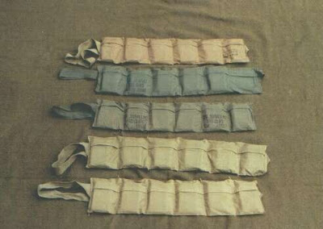

Revolutionary War Minuteman. (They called him a "Minuteman" for a reason, as he was expected to muster at a minute's notice.)

"Nitre in the cave, sulphur in the ground, charcoal in the firepit and flint in the quarry never scared anybody, boy, let alone killed 'em. And a musket or a rifle without ammunition is jest a club. You don't keep the King's men away with jest words and bluster. It's work, hard work, as much as will that's needed to make a killin' -- and no man ever became free or stayed free without killin'. And I believe God meant men to be free. So it is God's own work we must be about this day, lad. Work hard . . . and learn." -- The Powderman's Apprentice, an unfinished short story.
Theaton, over at Keep and Bear Arms the other day, took me to task for this post from Friday entitled Praxis: Tactical Packing the 7.62x54R -- of SPAM, Football Monkeys and Tool of the Evil Communist Conspiracy Against Imperialist Yankee Running Dogs.
His gripe:
Comment by: theaton (8/8/2009)
The country is being destroyed by those that hate the Constitution and we that have a duty to uphold and defend it are doing little or nothing. What does ammunition packaging have to do with the restoration of this Constitutional Republic? Am I missing something here? Are we ever, as a group, going to focus on what really needs to be focused on?
"What does ammunition packaging have to do with the restoration of this Constitutional Republic?"
Everything, Theaton.
Everything.
The credible deterrence to tyranny embodied by the Second Amendment and the concept of the armed citizenry means nothing if that body of the people is not ready to resist. Tyrants, as the powderman tells his apprentice, are not deterred by possibilities but by realities.
If you keep your ammunition, at least a good portion of it, in tactical packaging it speaks to your willingness to fight.
Target shooters don't need bandoleers.
Hunters don't need bandoleers.
Gun collectors don't need bandoleers.
BUT TYRANTS ARE NOT DETERRED BY TARGET SHOOTERS, HUNTERS OR GUN COLLECTORS.
They ARE deterred most often by citizen soldiers willing to fight. And citizen soldiers willing to fight give evidence of that willingness by keeping their skills practiced, their rifles clean and their ammunition in bandoleers.
I have written on this subject, the strategic importance of it to liberty as well as the tiny details of the practicalities, many times. Go here here for a short list of some of those posts.
And here, for the uninitiated is what bandoleered ammunition looks like:


Ammunition in bandoleers.Don't look like much, do they? But those are Liberty's Teeth in those nondescript pieces of cloth, ready to bite.
Predatory regimes, like street criminals, carefully size up their opposition before striking. Credible deterrence of these criminals, large or small, involves situational awareness, will and readiness to do battle instantly.
If a person or a people lack any one of these three, they will be robbed of their property, their liberty or their lives.
Mere bandoleers do not make a modern day Minuteman, but every competent, credible modern day Minuteman packs his ammo in bandoleers.
And the Founders' Republic, if she is to be saved, will be saved by men with rifles, bandoleers and the will to use them.
Establish credible deterrence and you may safely debate with your opponents. Without that, you are merely negotiating the terms of your surrender.
THAT is what ammunition packaging has to do with the restoration of this Constitutional Republic.
Mike
III
COMMENTS ARE NOW CLOSED
41 comments:
"If there is no stick to fear, whats to stop the donkey from just taking the damned carrot?"
Well said, Mike ......
No sane person would go into battle with all of their ammo in spam cans. David had a bag of rocks tied to his belt when he killed Goliath, not a bandoleer. Not a single founding father that I'm aware of had a bandoleer. As long as the ammunition is loose and available when needed, it doesn't matter how it's packaged. The lack of a bandoleer will not cause the loss of property or life. A bandoleer will never restore this Republic. A well trained person, with arms, that understands rights, duties, tactics and the enemies weaknesses will. Worrying about fitting 7.62x54R into a bandoleer not made for that round is equal to fiddling while Rome burns, at least in my opinion. My intent is not to divide but to get people to focus on the task at hand. I just don't see re-inventing bandoleers as a necessary step towards restoration.
theaton
Tony Heaton
Hey Gun Monkey, does the donkey care if I take the stick out of the back of the wagon or out of a specially made stick holster? All that matters is that the stick is available when needed.
Tony sez (and I respond):
"No sane person would go into battle with all of their ammo in spam cans. David had a bag of rocks tied to his belt when he killed Goliath, not a bandoleer."
MBV: Tony, the bag of rocks WAS a bandoleer.
"Not a single founding father that I'm aware of had a bandoleer."
MBV: Why do you think I posted the illustration of a Minuteman? He has his equivalent of a bandoleer (ammunition reloads at the ready) in his powder horns (one for the barrel and one for the pan) and his shot bag.
"As long as the ammunition is loose and available when needed, it doesn't matter how it's packaged."
MBV: These days, Tony, loose is not tactical, it is clumsy, noisy and slow, so yes, it does matter how it is packaged.
"The lack of a bandoleer will not cause the loss of property or life."
MBV: Really? I invite any combat veterans to discuss this with Tony. At length, if you like.
"A bandoleer will never restore this Republic."
MBV: By itself, no. But the bandoleer represents readiness, credible deterrence, and the Republic will NOT be restored without those.
"A well trained person, with arms, that understands rights, duties, tactics and the enemies weaknesses will."
MBV: Not if he is unable to keep his firearm fed at a critical moment.
"Worrying about fitting 7.62x54R into a bandoleer not made for that round is equal to fiddling while Rome burns, at least in my opinion."
MBV: I got that. So don't spend money on bandoleers, Tony. Nobody is forcing you to.
"My intent is not to divide but to get people to focus on the task at hand."
MBV: As is mine.
"I just don't see re-inventing bandoleers as a necessary step towards restoration."
MBV: And there we disagree. Duly noted and memorialized.
Metaphorically speaking, Anonymous sez:
"Hey Gun Monkey, does the donkey care if I take the stick out of the back of the wagon or out of a specially made stick holster? All that matters is that the stick is available when needed."
To which I reply, if you foresee the possibility that:
a. You may have to hit the donkey more than once, yes. Or,
b. If the donkey has friends, yes. Or,
c. If the donkey can hit you back, yes. Or,
d. If you are unable to reach the donkey, but a friend of yours who is stickless can, and you can toss him the stick and accomplish the mission of striking the donkey, then yes, again.
It matters greatly.
Running out of ready ammo in a firefight is no joke and frankly, I don't know why I'm having to argue the point.
Either you're serious about being a member of the armed citizenry (which presumes your willingness to engage in armed combat with predators of all types) or you are not.
And if you are not, you came to the wrong blog.
I've never owned more than a .22 rifle and a few shotguns - and I'm not much of a hunter. But I'm willing to learn - and I've learned a lot from all of you. So keep it up. You have my sincere thanks.
Soooo Tony,
You must be a hunter, target shooter or collector.
Ever seen the elephant? Had to feed a main battle rifle in a hot situation from loose rounds stuffed in your pocket? Had to scoop up those same loose rounds to re-fill those pockets in a hot situation?
I'll take a bandoleer full of mags or stripper clips any day. Ask Custer what happened when his boys didn't take care of their ammo and verdegris made it difficult to get it out of their cartrige belts. Would not have changed the end result given the disparity in numbers but I'd be willing to bet the opposition would have suffered more casualties.
Fast reloads are what is needed if you want to have a decent chance at survival when faced by multiple opponents. Or perhaps you will just challenge them to a one on one duel when they come for you.
MBV: Tony, the bag of rocks WAS a bandoleer.
It was a bag that held all sizes of rocks so that David didn't need to worry about what caliber of rocks he had at the time.
MBV: These days, Tony, loose is not tactical, it is clumsy, noisy and slow, so yes, it does matter how it is packaged.
By loose, I meant not in spam cans, not unboxed and clunking together.
MBV: Really? I invite any combat veterans to discuss this with Tony. At length, if you like.
Combat veterans please respond. I've not talked to one that cared one way or another about bandoleers. I'm a veteran but I saw no combat.
MBV: By itself, no. But the bandoleer represents readiness, credible deterrence, and the Republic will NOT be restored without those.
The minuteman represents readiness, not his tools. Without his courage and training, his tools are useless. As we have seen of late.
MBV: Not if he is unable to keep his firearm fed at a critical moment.
So just buy enough magazines to hold all of your ammunition. Seriously, there are many ways to feed a firearm.
MBV: I got that. So don't spend money on bandoleers, Tony. Nobody is forcing you to.
But you just spent a whole article telling me they were useful and without them I'd loose my property and/or my life. Seriously, I'm not telling anyone not to use them but money can be better spent.
MBV: And there we disagree. Duly noted and memorialized.
Maybe my thoughts on bandoleers boils down to semantics. I just think this country is close to the point of no return. There are plenty of tools that have already been invented. Yes, some of them can be improved. Our enemies are becoming more blatant about their intent and Constitutional Violations. They believe they have nothing to worry about with respect to resistance. History proves their beliefs accurate. They are using intimidation to squash dialogue. I suspect that the useful dialogue at KABA was squashed by their threats. I guess sewing projects are safe to discuss but it just doesn't seem like the discussion a 3per would be having at this stage in the game.
Having been in at least 20 firefights, I can attest to the effectiveness, and vitality of the bandoleer. Theaton has not seen the critter, or he would know the error of his point. I have x amount of ammo bandoleered, x amount of ammo in P-Mags, and x amount of ammo on stripper clips. Minuteman? You bet. Is it important? Winners always want the ball. I remember one saying, while an active duty soldier, among others. It was stupid, but it worked, so it really wasn't stupid, like Murphy's Law. Keep your shit rolled in tight little balls, unless you can see the future. Means if you are ready, and the stuff hits the fan, you got a chance. Loose rounds in a rusty ammo can says loser.But hey, Theaton, if you still don't like it, just stay in the rear with the gear, so you won't get any body killed with your debating society. Having served in the Infantry, I can tell you with a high degree of accuracy that 9 out of 10 men are not fit for the Infantry. A hard-headed, disciplined killer is what it takes.
Well said, Mike. Readiness shows intent. We want our intent to be clearly read, as we hope to stop what so many of us know is an inevitability.
Watch for IIIs to start showing up in the Great Lakes area. Stencils are done and making the rounds.
GIII
Either you're serious about being a member of the armed citizenry (which presumes your willingness to engage in armed combat with predators of all types) or you are not.
Just when is this armed citizenry going to act? Do we wait until the politicians violate the Constitution? Do we wait until they spend us in to unrecoverable debt? Do we wait for the yellow stars on our clothes? Do we wait for the trains to take us to the camps? Do we wait until after the shower? Do we wait until the ovens are just almost hot enough? We are currently between the yellow stars and the train ride. How much longer do we wait? I'm fairly certain that I know the answer, but not many will admit it. The actual Three Percenters that fought and died for this country would be embarrassed that the current Three Percenters would dare to use that comparison. They didn't put up with near the crap that we have. Also, they didn't make and fly their flags for profit. They made and flow them in search of freedom and liberty.
Your heart is racing, adrenaline is pumping, the sweat starts running off your body, you get "tunnel vision, you loose your hearing, you loose your fine motor skills.
Don't listen to me I am one of those crazy guys who practices breathing and dry firing while in the prone position. I also am getting into the best physical condition that I can. I guess having my ammo as ready as possible makes sense ...one thing that I won't have to worry about when the time comes.
A hard-headed, disciplined killer is what it takes.
Bull-shit, hard-headed, disciplined killer's get good soldiers killed.
"In rear with the gear." I heard that cliche on Platoon too.
theaton
Two statements from Tony I will respond to:
"The lack of a bandoleer will not cause the loss of property or life."
"A bandoleer will never restore this Republic."
First things first: The lack of a bandoleer WILL, in fact, cause the loss of property or life. Why? Simple: Without resupply, which is what the bandoleer is about, i.e., the ability to reload magazines, external or internal (via stripper clips and charging 'spoons'), once you're done with the ammunition you happen to have in magazines on your person, you're basically reduced to hand-to-hand combat to protect your life and property, whether in your home or in the field (the property in the field being the ground you hold, your ruck contents, and your person). In this day of 'suppression fire' and 'area denial' shooting, you can use up a few hundred rounds really, really fast. Within a few minutes, even in the semi-automatic mode.
Our folks routinely carry two 100 round bandoleers in their rucks in addition to the 210 rounds minimum in magazines on their persons. Buddy teams, who've been caliber standardized might even carry more. It's up to them. We don't like the idea of having large, funny looking golf clubs to oppose those who would kill us.
We prefer rifles with ammunition.
The second statement, well, what can I say? "A" bandoleer? Nope. 100 bandoleers per rifleman of the 3%? Yeah, I'll bet on that. Drop the numbers to 50 or even 20. I'll take that any day.
What bandoleers mean in to real-world combat resupply is the ability to transfer rounds from packaging into loaded magazines ready for firing as quickly as possible.
I would point you toward historical examples, the most obvious of which would be the massacre of the Brits at the Battle of Isandlwana by the Zulu. The Brits would not prepare their boxes of ammo resupply by opening them (they were screwed shut) nor issue them until the supply NCO had the proper 'chit', and then only 10 rounds per man.
"It is said that a major problem for the British was lack of ammunition and failings in the system of re-supply. It seems that this was not so for the 24th. However Durnford’s men on the extreme right flank did run out of ammunition and were forced to mount up and ride back into the camp, thereby leaving the British flank open.
http://www.britishbattles.com/zulu-war/isandlwana.htm
Source link is a Brit site, so they're a bit more 'kind' to their troops than objective historians may be.
Point remains. While vastly outnumbered, one of the finishing blows was the lack of ammunition and resupply in the battle.
Now, let's extrapolate a bit and bring this to a possible 'future' battle.
Want to be the guy in charge who didn't believe in bandoleers, just had loose rounds, and kept seeing his men die because they couldn't get reloaded?
I don't.
As a free man, you can certainly choose to engage in any behavior, no matter how illogical, that you choose to engage in. However, let's not confuse the other members of the armed citizenry who wish to learn effective methodes of field craft.
Like I said, as for me and my "merry little band", we'll carry at LEAST two 100 round bandoleers in their rucks in addition to their loaded magazines.
Watch for IIIs to start showing up in the Great Lakes area. Stencils are done and making the rounds.
Did anybody read the quote at the top of this article?
"And covenants, without the sword, are but words, and of no strength to secure a man at all." -- Thomas Hobbes, Leviathan, Chapter 17. The only thing that shows intent is actions. Everything else is just hot air.
I don't see why the controversy. A bandoleer is just way to package ammunition for accessibility. Originally it was a wallet that a "musketeer" carried for his powder and shot. Later it was a belt, usually worn over the shoulder, with loops for individual cartridges. Now it is generally a light canvas bag with compartments for carrying magazines and/or ammunition in stripper clips or some other organizer.
What's the big deal? Even a hunter usually carries extra rounds in a wallet or a pouch.
I make mine from the nail aprons I buy at Home Depot or Lowes, A little hot glue, some small zip ties and rubber bands then -- viola! -- I have a cheap portable package for 80 rounds of 308 in 10 round strippers. I'm going to have to try out the Ziploc packaging.
A few points to The Trainer:
Failure to prepare your ammo has nothing to do with a bandoleer. theaton didn't say anything about leaving the ammo unprepared. resupply also has nothing to do with a bandoleer. Your example is about bureaucracy.
My father and four of his friends survived Viet-Nam without ever using a bandoleer. They didn't seem to have any problems feeding their firearms without bandoleers. They didn't loose their lives or property so the lack of a bandoleer WILL NOT cause loss of life or property. Wow, I can cause bold type too.
I carry 600 rounds while training, 300 in magazines and 300 otherwise. I don't have a single bandoleer. I train with people that do and people that do. Other's use even a different method. Some that carry bandoleers can reload faster than I can and I can reload faster than some of them. Same for other methods. One size never fits all. Find what works for you and then train that way. Training is far more important than the method of carrying ammo.
Some of the posts here make me worry about the quality and training the people will have when the time comes. If we have to many of these types, we are screwed. By types, I mean those that depend more on certain tools than they do training. Maybe they have bandoleers that magically load their weapons from them.
You posted some stuff on the Moisin Nagant. I have that 7.62x54R for you here in the batcave, but that's as close as I'm getting to one. I prefer either a Mauser or an Enfield, yet we have folks criticizing the rifle and choice.
Next, there's this thingie going on over bandoliers. Personally, I have 30 (plus spares) with various calibers loaded into them, so you know where I stand on the issue.
So, what's going on here, folks? Is it that the prags have been keeping their opinions fairly quiet lately, so you're all aching for a flame war? You all need to remember that old saying:
You dance with the girl what brung ya.
In order to dance, you 1) need a 'girl', and 2) you need to feed her when she gets hungry.
How you do this is up to you, but it needs to be done. I have yet to find "gungadin.com", and until I do, I have to carry sufficient ammo unto the task at hand. That means strippers/chargers loaded into bandoliers. As in 6 of them (300 rounds) are always sitting next to the already loaded rifle.
I don't notice anyone getting cranky about spare magazine pouches for your sidearm. Same thing.
I'd rather have it and not need it, then need it and not have it.
B Woodman
III
Soooo Tony,
You must be a hunter, target shooter or collector.
I'm none of these yet I'm also all of them.
I'll take a bandoleer full of mags......
You take that bandoleer full of mags ;) hehe haha. I'll take my method.
theaton
parabarbarian
I started this. I questioned the logic of worrying about a sewing project over worrying about the restoration of the Republic.
I'm glad I did, I've obtained a whole new perspective of the types of people that seem to consider themselves 3pers.
theaton
I think the whole point of the bandoleer thing was to get the ammo out of those &%@#*%^ spam cans that take 3 hours to open and get it into SOME form of combat packaging. Mike just happened to find a bandoleer of comparable size to fit the x54R dragonbreath rounds into.
Leaving all your ammo in bulk packaging that you can't get into doesn't say much for your personal readiness.
Personally, I like the foodsaver idea.
Bandos are a good way to carry spare ammo for your mags.
But don't you also need to have a loader, to make it fast to load up your mags from those stripper clips? Be sure to remind folks about that, and if you know good sources for loaders for various mags, (AR, M14, G-3, FAL) let us know.
Also, if you hear of good sources for real deal .556 steel core ammo.
Mike,
You may want to clarify that folks should have mags in a ready mag pouch system of some kind - vest, LBE, over shoulder bag, or even bandos modified for mags, THEN bandoleers with rounds on strippers and with chargers for resupply (and I would carry at least one bando on the body, as you may have to dump that ruck post haste!). and then a couple more in the ruck.
Bottom line, you can never have enough ammo, and if you got it, it had better be ready to go or it may as well not be there.
As for hard-headed disciplined killers, I'm with Sean on that (ex Cav Scout). The killers are the ones that get the job done, and far from getting good soldiers killed, they're the ones that save lives by pushing their troops to be prepared.
Stick me with them when the balloon goes up.
BoarHawg
You will not find it difficult to prove that battles, campaigns, and even wars have been won or lost primarily because of logistics.-- General Dwight D. Eisenhower
Ammo caching is not an exciting topic, but excitement is precisely what you want to avoid if and when the shooting starts.
The better you prepare now, the better you can focus on the object at hand later, which is defeat of the enemy.
Put up all the bullets, beans and bandages you can afford to store.
Robert E. Lee explained his surrender as being brought about not from a lack of arms or the will to fight on, but from the troops' suffering resulting from a diet of "parched corn".
Unforeseen eventualities will provide ample opportunities to lose this fight. Try to avoid succumbing to an ignominious loss by attrition. Logistics is one of the few elements of warfare over which any one of us has control.
MALTHUS
Piss, moan...piss, moan...
The principle is resupply in a Maneuver Warfare world as opposed to Attrition Warfare supply lines...
Bandoleers, while not being the end all, be all, help riflemen move toward that objective.
Sheesh.
If most here were to look at the message rather than pick at the nits, we just might get some folks moving in the right direction.
Is everyone going to do things the same way?
No.
Is everyone going to have the same method?
No.
Do what you think will work, and experience will tell you what works and what doesn't....provided you survive the first die off.
Now...next subject.
We obviously have a failure to communicate. The point, which I'm sure almost everyone understands, is that we have to be at least as prepared for battle as the people who will be shooting at us. Most of my bandos are filled with mags, those who don't have enough mags should carry whatever is the best thing they can get. If that's a box of 22 shells dumped in your pocket ok. Mike is just trying to give ideas that WILL save your life, that is if you plan to defend this Country instead of wait for others to do it. There are lots of web sites you can go to and argue AR or AK, 30 call or 556. This is not that web site. This is a site for friends to discuss anything that will help us achieve our goals and keep our family safe. If you don't want a damn bandoleer don't carry them. If you have a better idea lets hear it. I'm sure we would all appreciate hearing from those who have a better idea.
Weaver
Anonymous 10:29 SEZ:
"Just when is this armed citizenry going to act? Do we wait until the politicians violate the Constitution? Do we wait until they spend us in to unrecoverable debt? Do we wait for the yellow stars on our clothes? Do we wait for the trains to take us to the camps? Do we wait until after the shower? Do we wait until the ovens are just almost hot enough? We are currently between the yellow stars and the train ride. How much longer do we wait? I'm fairly certain that I know the answer, but not many will admit it. The actual Three Percenters that fought and died for this country would be embarrassed that the current Three Percenters would dare to use that comparison. They didn't put up with near the crap that we have. Also, they didn't make and fly their flags for profit. They made and flow them in search of freedom and liberty."
Not having time to answer this one today, I held it until 2200 hrs. In the mean time, I forwarded it to a good friend. This is what HE had to say, and although I wouldn't have put it quite this vehemently, I must say I agree with his points. -- MBV
Here's something for an answer:
1. The armed citizenry must be ready to act when any one or a combination of the following occurs:
The opposition (most likely a LEA (law enforcement agency)) draws first blood ala another WACO or similar incident.
The opposition brings UN troops (armed) onto US soil to police the population under the color of any excuse/reason, ie, H1N1, natural disaster, etc.
The opposition formally states they will not abide the limitations of the Constitution in the future.
The opposition formally states there will be a 'political union' between Canada, US, & Mexico.
2. "Never get out of the boat unless you're willing to go all the way!" Martin Sheen - "Apocalypse Now" Right now, many people are just coming to understand how much of their liberty is at stake. We are using this time to train and organize while we still have a semblance of liberty.
3. As to the stage of being between the 'yellow stars' and the train ride, you couldn't be more wrong. First, the Jews were disarmed, as were all Germans. Only after disarmament, when they couldn't do anything about it, were the Jews forced to wear yellow stars. We can still purchase ammo, guns, and train as much as we want. I'd suggest you spend more time training and less time bitching.
3. As to the comments about the flags, under our economic system, products cost money. Are you going to donate the funds? Are you going to donate your time? Everything costs somebody something. Do you work for free? To produce the flags, patches, books, etc, that help folks animate their feelings about their country, a great deal of time and money are put into the endeavors. Rest assured, if war does come, you will see the 3 percent give till it hurts to those in need by the donation of their life's blood to pay the butcher's bill.
Until then, how about cutting us some slack and having a big cup of "shut the f-ck up"? -- Thomas A. Hawke
What is the equivalent of stripper clips and bandoleers for the HK-91 magazines, which don't seem to accept a stripper clip guide that's small and light? Is that what the cheap surplus aluminum mags are for, just put everything in mags?
It is with a mild sense of amusement that I observe the prattle of so many apparent self-styled experts who have never faced hostile fire or taken a life in combat, and who humble themselves to advise the rest of us as to our folly in choosing how to carry ammo. I am tempted to say, if you haven't been there, please stay in the 'theory' classroom rather than regale us with keen speculation formulated in a safe armchair.
And if any reader finds the content of this excellent site to be boring or irrelevant, there is no requirement to remain, and there are plenty of Rambo-wannabe "Kill them All" blogs out there to peruse. the praxis entries are for passing on informaiton... it is that simple. Not every post on this blog is required to wave the flag and issue marching orders.
Likewise, when anyone begins to wail and bemoan the lack of action on the part of IIIpers because no one has charged into a local armory or BATFU office, firing madly with their Tec-9 and reloading from a pocket full of loose, lint covered 9mm rounds... I would say again, if you haven't done more than anyone else, then please show us by your example, and we will follow you as we celebrate the victory of the free people of the USA once more.
Until then... yeah... 'in the rear with the gear' is a pretty neat phrase and it fits a lot of occasions.
I DO wonder how many of the trolls here are BATFU plants who pop up to create division / diversion.
How many Ruby Ridges or Wacos does it take? How many Constitutional violations does it take? They will formally state that the Constitution doesn't matter after it is too late. Every time a Waco happens, we draw a line and say no more. Then the next one comes and we step backwards and draw another line.
"The tree of Liberty needs to be watered from time to time with the blood of patriots and tyrants." Thomas Jefferson - no movie, real life.
I train on Saturday and Sunday. I write my Congressmen weakly. I read websites daily to see what we and the enemy might be up to.
As for economics, No I don't work for free. I work so that $40K of my hard earned money can go to taxes for those that don't work. I've been poor and I've been pretty well off. In each situation I was free. I don't love America because of money, I love it for Liberty and Freedom. Everything I do for the restoration of this Republic I do for free. In fact, I use 10% of my income to purchase firearms, ammunition and other gear for those less fortunate than myself. I don't recall George Washington trying to make money off the soldiers that were fighting for him. In fact, he used his own money to pay them.
You can refuse to post my comments here but I will never shut up.
The discussions at KABA have all but dried up since registration. I imagine Mike had something to do with that since he can't stand people that don't do things exactly his way. You may think you only need friends to bs with, but we need all like minded people in this discussion, friends or not.
First off, I want to say that, for some reason or another, this "debate" got WAY out of hand. I read Tony's (theaton's) comments on KABA pretty regularly. Tony, you have a lot of good things to say,...I enjoy and learn from your comments.
Tony read MVB's post and took something different out of it than most other readers. Oh well. Maybe he has a some sort of beef with MVB. I dunno. That's his issue, or between them. Otherwise, I see validity in both sides of this (seemingly) silly argument. We are all on the same side here, I hope. We all have (and/or need) good information, advice, and opinions in regards to the current mess we are all facing in this country. All that being said, healthy debate amongst all of us like minded right-wing extremists is necessary and helpful.
Mike, I agree with your good friends thoughts (in your post right above this one). I have one nit to pick, and one heavy concern.
In the 3rd and 4th bullet of his 1st point..."when...the following occurs:...The opposition formally states..."
My immediate thoughts are that, what if it never is "formal?" So what? They could INformally do those things or anything to a point where it takes the same effect as if it WAS formally stated. There are already tons of things that FEDGOV has done that are un-Constitutional. It seems to me that if we wait until it's "formal," well, it may be too late.
And my concern is this: (refering to bullet 1 and 2 of the 1st point) Even though we all here claim to be ready for such events, I have trouble visualizing exactly how it happens. Coordination/link-up, chain of command issues, logistics. No matter how patriotic and determined we all may be, 25 or 75 or 350 or more unorganized patriots showing up from every corner of the country to react to another WACO or resist UN troops (or US troops) just isn't plausible to me without some semblance of organization.
Just my two cents and concerns
-JoseyWales3633@yahoo.com
Anonymous 7:31PM asks:
"What is the equivalent of stripper clips and bandoleers for the HK-91 magazines, which don't seem to accept a stripper clip guide that's small and light? Is that what the cheap surplus aluminum mags are for, just put everything in mags?"
At last! A praxis question, and a good one too. And frankly I don't know the answer. I will forward it, however, to someone who will know.
When I owned an HK91 as my MBR back in the early 80s, I cast around for some and came up empty. shortly after that I decided that the M14 design was better. I hated that the HK had no bolt hold-open and thus I had to put two tracers in the mag -- one five from the bottom and one next to the last. I resented the expense of the tracers. Funny. Oh, if I knew then what I know now!
Anyway, I will find out and let you know.
Mike
Theaton really missed the big picture. While he rightfully is concerned about threats against the Republic, part of the picture is being prepared to defend not only it, but one's family and self. To that end, vac-packing ammo has a significant practical element to it as Mike points out: improving shelf life by keeping moisture and oxygen away from it. For example, any ammo that comes in cardboard boxes must be repackaged or stored in it's entirety in a tightly controlled environment(consistently cool and dry). Lacking the tightly controlled environment, many elect to vac-pack vulnerable ammo and place in ammo cans as part of this effort in simply being prudent with valued and vulnerable supplies. Ammo is not the only thing that should be vac-packed...
It's that simple, both practical reasoning and considerate of the larger picture.
Bobcat
Bobcat, please show me where I said that people shouldn't be prepared. I've been prepared and preparing for years. This post had nothing to do with vac-packing. I agree with vac-packing. If you're just now worrying about how to fit 7.62x54R into a bandoleer that is not made for that round, you've missed the party. If you're not going to read my posts, don't comment about them. You look like Congress commenting on a bill that they haven't read. You guys will still be preparing when the restoration is complete.
I have no beef with Mike. If you'll look back at all the threads on KABA that attacked Mike, I've always posted something in support of him. I think the 7.62x64 article upset me because I feel that too many of us are focusing on the wrong thing at the wrong time. I simply asked a question. In Mikes answer he said that tactical packaging speaks to your willingness to fight. I disagree with that because I've seen many dressed the right way that lack the courage to back up the look. Drawing a line then stepping backwards to draw another line speaks to our willingness to fight. Expecting the current enemy to announce something formally speaks to our willingness to fight. Allowing Sixty-three plus years of Constitutional violations speaks to our willingness to fight. I agree that the enemy must start this. I'm just worried about how many times they have started it and we have done nothing. After I made a post in response to his answer the ad hominem attacks started, not from Mike but from others. Calling me a collector, target shooter or hunter without knowing anything about me calls into question your credibility. Saying that I said things that I never said completely destroys your credibility.
theaton
Theaton, I first heard the term, "In the rear with the gear", on the second day of a three day firefight, in answer to the question I made, "Where the f- is the First Sgt?" Somewhere in Cambodia, about forty miles west of the Parrots Beak, April,1970. Where were you, sportsfan?
Fortunately, I started buying a lot of ammo when it was still affordable. Even then, clips, mags and bandoleers were more expensive but i bought a bunch anyway and have about a third of my 308s in clips and most of those in bandoleers in clean .50cal ammo cans. Just waiting for the blue of their helmets before I start releasing the lead.
COMMENTS ARE NOW CLOSED. THAT'S ENOUGH INSULTS FOR NOW. -- MBV
Post a Comment